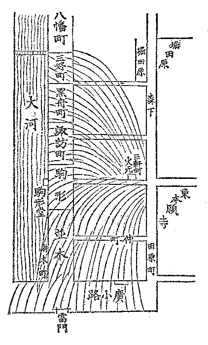

幕末維新懐古談
その頃の消防夫のことなど
高村光雲
江戸のいわゆる、八百八街には、火消しが、いろは四十八組ありました。
浅草は場末なれど、彼の新門辰五郎の持ち場とて、十番のを組といえば名が売れていました。もっとも、辰五郎は四十八組の頭の内でも巾の利く方でした。
いうまでもなく、消防夫は鳶といって、梯子持ち、纏持ちなどなかなか威勢の好いものであるが、その頃は竜吐水という不完全な消火機をもって水を弾き出すのが関の山で、実際に火を消すという働きになると、今日から見ては他愛のない位のものであった。竜吐水の水はやっと大屋根に届く位、それも直接消火の用を足すというよりは、屋根に登って働いている仕事師の身体を濡らすに用いた位のもの……ゲンバという桶を棒で担い、後から炊き出しの這入ったれんじゃくをつけて駆け出した（これは弁当箱で消防夫の食糧が這入っている）。それから、差し子で、猫頭巾を冠り、火掛かりする。
火消しの働きは至極迂遠なものには相違ないが、しかし、器械の手伝いがないだけ、それだけ、仕事師の働きは激しかった。身体を水に浸しながら、鳶口をもって、屋根の瓦を剥ぎ、孔を穿ち、其所から内部に籠った火の手を外に出すようにと骨を折る。これは火を上へ抜かすので、その頃の唯一の消火手段であった。
で、この消し口を取るということがその組々の一番大事な役目であって、この事から随分争いを生じたものである。何番の何組がどの消し口を取ったとか、それによって手柄が現われたので、消防夫の功績は一にこれに由って成績づけられたものです。それで、纏のばれんは焼けても、消し口を取ると見込みをつけた以上、一寸も其所をば退かぬといって大層見得なものであった。
消し口を取ると、消し札というものをぶら下げた。これは箱根竹に麻糸で結わえた細い木の札で、これが掛かると、その組々の消し口が裏書きされたことになったのです。
その頃は、豪家になると、百両とか、二百両とか懸賞でその家を食い留めさせたものです。こういう時には一層消防夫の働きが凄まじかった。
一体に、当時は町人の火事を恐れたことは、今日の人の想像も及ばぬ位である。それは現今の如く、火災保険などいうような方法があるではなく、また消火機関が完全してもいないから、一度類焼したが最後、財産はほとんど丸潰れになりました。中には丸焼けになったため乞食にまで身を落とした人さえある。今日では火事があって、かえって財産を殖やしたなどという話とは反対です。したがって火事といえば直ぐに手伝いに駆け附けた。生命の次ほど大変なことに思っていたこと故、見舞いに走せ附けた人たちをば非常にまた悦んだものである。
ですから、火事見舞いは、当時の義理のテッペンでした。一番に駆けつけたは誰、二番は誰と、真先をかけた人を非常に有難く思い、丁寧に取り扱いました。差し当って酒弁当は諸方から見舞いとして貰った物を出し、明日は手拭に金包みを添えてお礼に行くのが通例です。それで誰もかもジャンというと、それッといって駆け出す。……知人の家が火元に近いと飛び込んで見舞いの言葉を述べる。一層近ければ手伝いをする。それで、今の小遣いを貰い、帰りには、それで夜鷹そばを食ったなどと……随分おかしな話しですが、それも習慣です。というのも、畢竟町人が非常に火事を恐怖したところから、自然、大勢の人心を頼みにしました。何んでも非常の場合とて、人手を借りねば埒が明かない。それで、一般に町人の若い者たちは、心掛けの好いものは、手鍵、差し子、草鞋、長提灯に蝋燭を添えて枕頭に置いて寝たものです。
普通、女、子供であっても、寝る時は、チャンと衣物の始末を順よくして、ソレ、火事というと、仕度の出来るように習慣附けたものであった。特に、火事を重大視した実際的な証拠として、一旦、その家を勘当された悴とか、番頭のようなものが、火事と聞いて、迅速に駆け附けますと、それを手柄に勘当が許されたもの、全く火事は江戸人の重大視したものの最たるものであった。
俗に、火事を江戸の花とかいって興がるもののようにいいなされておりますが、実際は、興がるどころではなく、恐怖の最大なものであったのです。
それで、大火となると、町家の騒ぎはいうまでもないが、諸侯の手からも八方から御使番というものが、馬上で、例の火事頭巾を冠り、凜々しい打扮で押し出しました。これは火事の模様を注進する役目です。一層大きくなれば、町奉行が出て、与力とか同心とかいうものが働きます。
すべて、幕府時代においては、江戸の市中、大名、旗本の屋敷が六分を占め、四分が町家である割合ですから、町家が火事を重大視した如く、武家もまた戦場のように重く視ました。近火の場合には武家も町家も豪家になると、大提灯または高張りを家前なり、軒下に掲げ、目じるしとして人々の便を計りました。
このほか、火事についてはいろいろまだ話もあるが、まずこれで終りと致します。
ザッと浅草大火の焼け跡を略図にして見れば下の如し。

●表記について
- このファイルは W3C 勧告 XHTML1.1 にそった形式で作成されています。
- ［＃…］は、入力者による注を表す記号です。
- 傍点や圏点、傍線の付いた文字は、強調表示にしました。